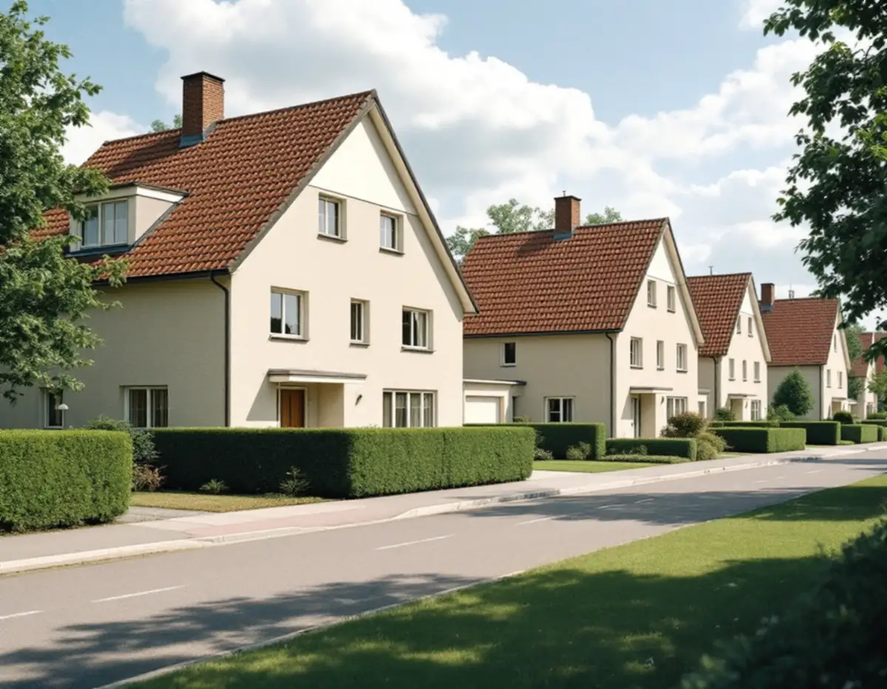
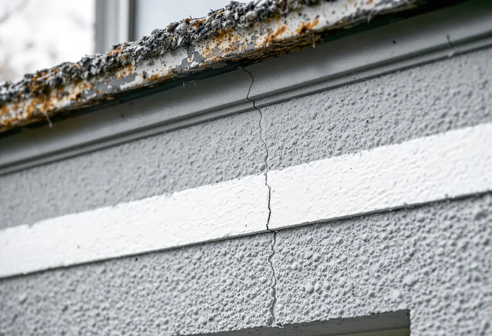

Platsbesök
Vi tittar på puts eller panel, dekorband och fönster och gör prov för att se vilken färg som sitter på.
Många av Järfällas småhus byggdes i grupp av samma byggfirma, med samma puts eller panel och en gemensam färgskala. När husen målas om är det därför längan eller kvarteret som är enheten, inte det enskilda huset. Geal Entreprenad AB tar målningsuppdrag i hela kommunen, med gratis platsbesök och skriftligt kostnadsförslag.

Kommunens kulturmiljöplan från 1999 beskriver material och färgsättning för varje utpekad miljö. I Ekedal, som Widmark & Platzer började bygga 1958, är husen genomgående spritputsade och radhusens gavlar har dekorband i slätputs. Färgskalan var från början grå, beige och gul. Kedjehusen vid Dressyrvägen från mitten av 1960-talet har beige spritputs med dekorband i vitt, och vid Betselvägens 1950-talsvillor dominerar ljus, beige puts.
Vid Skogsvägen och Toppvägen, byggda i början av 1960-talet av flera olika firmor, är fasaderna i stället oftast locklistpanel i ljusa kulörer. Kedjehusen vid Toppvägen har tvåfärgade gavlar, ljusare nedtill och mörkare upptill.
I Kallhäll byggde Bolinders radhus och villor för sina anställda. Radhusen hade ljust målad locklistpanel men kläddes på 1970-talet med plåtpanel i en dovare färgskala. Villorna i Skogstorp hade också locklistpanel i grått, gult, beige eller ljus puts, och planen konstaterar att många har ändrats sedan dess.

Kulturmiljöplanen är ovanligt konkret om vad som går förlorat. Om Ekedal skriver den att radhuslängorna i vissa fall ger ett splittrat intryck, eftersom den genomtänkta färgsättningen av varje länga, med flera nyanser inom samma färgskala, har bytts ut mot en mer individuell färgsättning. Planen tycker att färgsättningen bör knyta an mer till den ursprungliga när husen renoveras.
För Dressyrvägen, som beskrivs som mycket välbevarad, är rekommendationen att material och färgsättning inte ändras vid renoveringar. Och för Bolinderbyn skriver planen att det är av största vikt att alla radhuslängor har samma typ av fasadmaterial och en genomtänkt färgsättning.
Praktiskt betyder det att grannarna i en länga tjänar på att bestämma kulörer tillsammans, gärna med en gemensam provyta på en gavel. Riksantikvarieämbetet påpekar, om kalkfärg, att kulöravvikelser lätt uppstår om färgen blandas vid olika tillfällen. Samma risk finns när en länga målas i flera omgångar, så färgen bör beställas med samma recept för alla hus.
En spritputsad fasad har en grov, ojämn yta som samlar smuts och påväxt i fördjupningarna. Riksantikvarieämbetet skriver att spritputs bör rengöras skonsamt med våt- eller vattenblästring i stället för stålborste, så att strukturen inte slits ner. Sprickor och lösa partier lagas med ett bruk som liknar det befintliga innan något målas.
Valet av färg beror på vad putsen består av och vad den är målad med sedan tidigare. Kalkfärg fäster bra på kalkputs men dåligt på cementrika underlag, och myndigheten noterar att man vid mitten av 1900-talet alltmer gick över till kalkcementbruk och andra färger än kalkfärg. En puts från 1960-talet behöver därför provas innan färgtypen bestäms. Ska fasaden i stället putsas om eller tilläggsisoleras är det ett jobb för fasadrenovering.
Kulturmiljöplanen beskriver materialval och dekor som typiska för de områden Widmark & Platzer byggde i Järfälla. Dekorbanden i slätputs målas därför för hand och i sin egen kulör, så att gavlarna behåller sitt utseende.
Järfälla kommun skriver att fasadändringar på en- och tvåbostadshus inte kräver bygglov, och räknar byte av färg på fasaden till fasadändringarna. Undantagen är särskilt värdefulla byggnader och områden och detaljplaner med utökad lovplikt. Kommunen påpekar också att lovfria fasadändringar ändå ska stämma med detaljplanen och utföras varsamt så att husets värden tas till vara.
Kulturmiljöplanen föreslog redan 1999 att utökad lovplikt för fasadändringar skulle införas i Ekedal och Dressyrvägen om planerna ändrades. Om det har skett beror på vilken plan som gäller för ditt hus, och det går att kontrollera i Järfällakartan eller hos kommunen. Den som vill ha ett beslut kan också söka frivilligt bygglov.
Enligt kulturmiljöplanen är radhusen i Bolinderbyn upplåtna med bostadsrätt. I ett bostadsrättsradhus är fasaden föreningens ansvar, och en ommålning beställs av föreningen för hela området. Som boende ansvarar du för väggar, tak och snickerier inne i lägenheten, och det är också bara det arbetet som ger dig rotavdrag.
Vi tittar på puts eller panel, dekorband och fönster och gör prov för att se vilken färg som sitter på.
Vi går igenom detaljplanen och vad kulturmiljöplanen säger om området, och föreslår kulörer för hela längan.
Tvätt, lagning, färgtyp och antal strykningar står med – per hus, så att varje ägare får sin del.
Skonsam tvätt av putsen, lagning av sprickor och skrapning av panel och fönster.
Strykningarna görs i rätt väder, med samma färgtillverkning på hela längan.
Vi går igenom resultatet tillsammans och bättrar där det behövs.
Äger du ditt radhus eller din villa räknar Skatteverket målning av fasad, fönster, väggar, tak och golv samt tapetsering som rotarbete. Målning av staket och murar ger inget avdrag. Avdraget är 30 procent av arbetskostnaden, högst 50 000 kr per person och år, och ROT och RUT får tillsammans vara högst 75 000 kr.
När flera grannar målar samtidigt gör var och en avdraget för sitt eget hus. I bostadsrätt gäller avdraget bara arbete inne i lägenheten. Geal drar avdraget direkt på fakturan.
På putsade hus avgör mängden sprickor och lagningar och hur mycket dekor som ska målas för hand. På panelhus är det skrapningen och fönstren. Målar flera hus i en länga samtidigt kan ställning och etablering delas. Platsbesöket är gratis och du får ett skriftligt kostnadsförslag.
Fasad, fönster och invändig målning.
Målare i Stockholm →Takbyte, takbesiktning och plåtarbeten.
Takläggare i Järfälla →Jakobsberg, Viksjö och Kallhäll.
Takrenovering i Järfälla →Planbesked, extra bostad och ansvar.
Byggföretag i Järfälla →Underhållsmålning i rätt tid.
Fasadmålning i Järfälla →Kedjehus, sekelskiftesvillor och parstuga i Stäket.
Fasadrenovering i Järfälla →Bruksvillor, radhus och 70-talsfönster i Järfälla.
Fönsterbyte i Järfälla →Kedjehus, egnahem och gamla golvskikt.
Golvläggare i Järfälla →Kedjehus, radhus och souterräng.
Köksrenovering i Järfälla →Stuprör, skärmtak och plåttak i Järfälla.
Plåtslagare i Järfälla →Förgårdar, förråd och ytterdörrar.
Snickare i Järfälla →